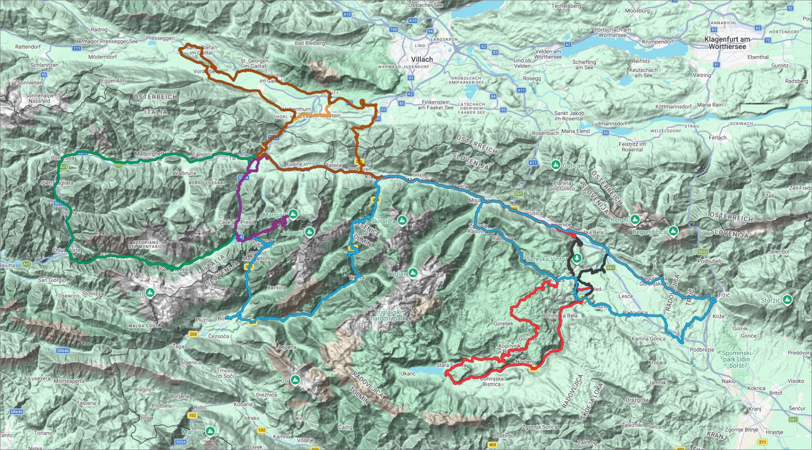

Slovenia - Alps
A Kranjska Gora–based tour that makes the most of the spectacular Julian Alps
Dates: 14-21 May 2027
Tour Overview
When is it?
What is it?
- From our base in Kranjska Gora, we take daily rides through the spectacularly varied landscapes and terrain of the Julian Alps and it's surrounding areas, including the Alpe Adria cycle path and the emerald‑coloured Soča Valley, crossing the border into Italy and Austria.
- The tour is primarily a road tour but does use well paved cycle paths that are suitable for road bikes.
- Our overnight accommodation is based in Kranjska Gora and we have rides organised over a 6-day period, on road routes through the Julian Alps, crossing the border into Italy and Austria.
- Cycling in this area is challenging with lots of climbing, so riders should be well-prepared. Riders will be encouraged to pace and not race so that everyone can enjoy the experience.
- The tour is limited to a maximum of 14 riders.
How much will it cost?
- For seven nights accommodation and transport of rider, bikes and luggage to and from Ljubljana aiport, the estimated cost is around £450 per person.†
- This estimate is based on a maximum group size of 12 riders and assumes shared twin-room accommodation.
- Single-room accommodation can be arranged, depending on availability, for an additional charge.
†All our tours are designed to make no profit and any surplus funds are distibuted back to each rider.
What is included?
- 7 nights' hotel accommodation in Kranjska Gora with breakfast included.
- Transportation of riders, bikes and luggage to and from Ljubljana airport to our accommodation in Kranjska Gora.
What is not included?
- Personal travel and transport of bikes and luggage to/from Manchester airport and flights to/from Ljubljana airport.†
- Cost of bike hire (if required).††
- Meals.
- Local / Country Taxes.
- Insurance.
† We’ll offer guidance on travel options and group travel arrangements.
†† We’ll offer guidance on bike hire options.
Routes
Where do we ride?
- The routes are designed to take you through the most scenic parts of the Julian Alps and cross the border into Italy and Austria. Routes may include options to switch to a shorter alternative with less elevation, or extensions if more miles are desired.
- Each day, we’ll propose specific routes, but these may be adjusted to reflect weather conditions or riders’ overall fatigue levels.
- Crossing borders within the Schengen area is generally seamless, with no routine checks. However, temporary controls can be introduced at short notice, so always carry your passport when travelling on routes that cross national borders.
- Many of the route sections go through tunnels, so it is important that your bike is fitted with front and rear lights.
- Some cafés do not take cards, so ensure you bring cash (Euros) with you on the ride.

Click to view map View Route LibraryRoute 1: The Lakes

The route heads east on cycle paths towards Mojstrana before climbing to the Pokljuka plateau, a vast area filled with a dense spruce forest. After crossing this popular road cycling area, we’ll descend towards the beautiful Lake Bohinj for a first cafe stop before heading to Bled looping the shoreline of it's famous lake. Afterwards, the idyllic Radovna Valley awaits, which leads back to Mojstrana, a village at the gates of the Triglav valleys. From there, we’ll retrace our route and cycle through the scenic Upper Sava Valley back to Kranjska Gora.
Cafés En-Route:
Route 2: Vršič Pass

We start the day with a ride over Slovenia’s highest paved mountain pass, the legendary Vršič. This climb winds through a series of tight, cobbled hairpins with each turn opening up wider Alpine views. Once you crest the top, a sweeping descent round multiple hairpins carries you into the spellbinding Soča Valley. From here, the road follows the river’s turquoise flow, easing into a gentle downhill that feels fast, fluid, and endlessly scenic crossing the Italian border towards the small town of Bovec for our first cafe stop. The route then heads north passing Lake Predil crossing back inrto Slovenia and looping back to Kransjska Gora.
Route 3: Alpe Adria

Alpe Adria is one of Europe’s most spectacular long‑distance cycling routes, and on this route you’ll experience one of its standout Alpine stages. Starting in Kranjska Gora, the ride carries you across the border into Italy, where the old railway line through the Kanal Valley offers a beautifully smooth and scenic stretch. You’ll roll past the quiet village of Dogna before climbing steadily toward the Sella Nevea pass and descending to the emerald waters of Lake Predil. From here, the route crosses back into Slovenia and loops back toward Kranjska Gora, completing a long but surprisingly manageable day in the saddle.
Route 4: Arnoldstein Loop

This is one of the less demanding routes of the tour and passes through 3 countries. The largest climb is early on in the route - the Wurzenpass - crossing into Austria taking you through the scenic Arnoldstein valley. It meets up with the Alpe Adria cycle path and crosses the Italian border into Tarvisio before crossing the Slovenian border and continuing back to Kranjska Gora.
Cafés En-Route:
Route 5: Mangart Saddle

This is an out and back route climbing one of Slovenias famous ascents. The Mangart Saddle climb is a 7-10 mile ascent, typically averaging 8–10%, with long stretches above 12–15%, carved tunnels, exposed mountain roads, and a summit around 6700 ft offering panoramic views across Slovenia and Italy. It’s demanding, unforgettable, and absolutely worth the effort. Cyclists who don't want to do this difficult climb can opt to stay at the bottom. Even in May, the conditions can be wintery with the road closed in places. Remember to pack appropriate gear for the weather and bike lights for the tunnel sections.
Cafés En-Route:
Route 6: Vorderberg Valley

This route is similar to the Arnoldstein route and passes through 3 countries. The largest climb is early on in the route - the Wurzenpass - crossing into Austria taking you through the scenic Arnoldstein valley. It extends down the valley towards the village of Vorderberg before looping back and joining the Alpe Adria cycle path crossing the Italian border into Tarvisio before crossing the Slovenian border and continuing back to Kranjska Gora.
Route 7: Lake Bled

This route is also one of the less demanding routes of the tour as it makes its way down the Krma Valley before heading towards the picturesque town of Bled for our first cafe stop. A loop arond the lake provides stunning views and a chance to rest and recharge before looping back to Kranjska Gora.
Route 8: Tržič Out and Back

This out and back route down the Krma Valley is mostly on quiet roads and cycleways, with gentle to moderate climbing, passing through forests, meadows, and small villages. It’s a beautiful, low‑traffic route ideal for a steady endurance ride rather than a summit challenge. After our cafe stop in Tržič we retrace our steps back up the Krma Valley to Kranjska Gora.
Cafés En-Route:
Route 9: Tržič Bled Loop

{kind=link}
This route to Tržič is identical to the Tržič Out and Back route, but after our cafe stop in Tržič we divert towards Bled and head back following the Radovna Valley towards Mojstrana and then back to Kranjska Gora. It gives riders an option to do a longer distance on the return journey.
Cafés En-Route:
Accommodation
Where do we stay?
- Your home for the tour is Berghi Hotel and Apartments, Kranjska Gora, where all riders share relaxed accommodation in one convenient base. Shared twin and single rooms are available.
- Breakfast is provided and venues for evening meals will be designated nearer the time.
- Secure storage for bikes and bike boxes is provided with PIN access and CCTV monitoring.
| Date | Location |
|---|---|
| 14.05.2027 | Berghi Hotel and Apartments - Kranjska Gora |
| 15.05.2027 | Berghi Hotel and Apartments - Kranjska Gora |
| 16.05.2027 | Berghi Hotel and Apartments - Kranjska Gora |
| 17.05.2027 | Berghi Hotel and Apartments - Kranjska Gora |
| 18.05.2027 | Berghi Hotel and Apartments - Kranjska Gora |
| 19.05.2027 | Berghi Hotel and Apartments - Kranjska Gora |
| 20.05.2027 | Berghi Hotel and Apartments - Kranjska Gora |
Travel & Logistics
How should I travel?
- We fly from Manchester airport and provide clear travel information so riders can coordinate their journeys and connect smoothly with the scheduled airport transfers.
- Riders will organise and pay for their own flight travel arrangements from and to UK airports. This includes bikes and luggage.
-
Bike rental is available for those riders not taking their own bikes.
See Bike Rental Kranska Gora
Recomended flights:
| Date | Time | Type | Operator | Flight No. | Departure | Destination | Comments |
|---|---|---|---|---|---|---|---|
| 14.05.2027 | 01:10pm | Air Travel | EasyJet | EZY2173 | Manchester Airport | Ljubljana Airport | Direct |
| 21.05.2027 | 17:10pm | Air Travel | EasyJet | EZY2174 | Ljubljana Airport | Manchester Airport | Direct |
What support is provided?
- Transportation of riders, bikes and luggage to/from Ljubljana airport to the accommodation in Kranjska Gora. †
† This is subject to everyone being on the same flight. If you are not on the same flight, you will need to arrange your own transportation to and from the airport/accommodation.
What should I bring?
- A well-serviced bike in good working order or organise a rental bike.
- Helmet (mandatory).
- Weather-appropriate cycling clothing.
- Daily ride essentials (water, nutrition, tools).
- Any personal medication you may need.
- Waterproof passport holder for border crossings.
- Front and rear lights for tunnel safety and navigation.
Itinerary
Important dates and times:
- 8:00am to 11:00am: Travel to Manchester airport.
- 1:10pm to 4:35pm: Fly to Ljubljana airport.
- 5:30pm to 7:00pm: Transportation of riders, bikes and luggage to our accommodation in Kranjska Gora.
- 9:30am: Bike check and rental collection.
- 9:45am: Ride briefing and group photo.
- 10:00am: Start of Ride.
- 8:45am: Ride briefing and group photo.
- 9:00am: Start of Ride.
- 8:45am: Ride briefing and group photo.
- 9:00am: Start of Ride.
- 8:45am: Ride briefing and group photo.
- 9:00am: Start of Ride.
- 8:45am: Ride briefing and group photo.
- 9:00am: Start of Ride.
- 8:45am: Ride briefing and group photo.
- 9:00am: Start of Ride.
- 1:00pm to 3:00pm Transportation of riders, bikes and luggage from our accommodation in Kranska Gora to Ljubljana airport.
- 5:10pm to 6:45pm: Fly back home to Manchester airport.
- 7:30pm to 9:00pm: Travel back home from Manchester airport.
Gallery
What will I see?
The tour has been designed to ride through the spectacular Julian Alps and pass by many scenic locations.